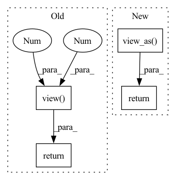

Pattern ID :2

Before Change
group: torch.Tensor = ctx.saved_tensors[1]
jacs = _jquaternion_to_rotation_impl(quaternion)[0][0]
dR = group.transpose(1, 2) @ grad_output
grad_input = jacs.transpose(1, 2) @ torch.stack(
(
dR[:, 2, 1] - dR[:, 1, 2],
dR[:, 0, 2] - dR[:, 2, 0],
dR[:, 1, 0] - dR[:, 0, 1],
),
dim=1,
).view(-1, 3, 1)
return grad_input.view(-1, 4)
_quaternion_to_rotation_autograd_fn = QuaternionToRotation.apply
After Change
),
dim=-1,
).view(size + (3, 1))
return grad_input.view_as(quaternion)
_quaternion_to_rotation_autograd_fn = QuaternionToRotation.apply
_jquaternion_to_rotation_autograd_fn = _jquaternion_to_rotation_impl
In pattern: SUPERPATTERN
Frequency: 3
Non-data size: 4
Instances
Fragment ID: 513
Project Name: facebookresearch/theseus
Commit Name: 6275951cff1fd0152ad84fc4f93e25cb32d9efae
Time: 2023-05-03
Author: 6612911+fantaosha@users.noreply.github.com
File Name: theseus/labs/lie/functional/so3_impl.py
M Class Name: QuaternionToRotation
N Class Name: QuaternionToRotation
M Method Name: backward(3)
N Method Name: backward(3)
M Parent Class: lie_group.UnaryOperator
N Parent Class: lie_group.UnaryOperator
M File Name: theseus/labs/lie/functional/so3_impl.py
N File Name: theseus/labs/lie/functional/so3_impl.py
M Start Line: 820
M End Line: 828
N Start Line: 790
N End Line: 803
'>
Before Change
),
dim=-1,
).view(-1, 3, 1)
return grad_input.view(-1, 3)
// TODO: Implement analytic backward for _jexp_impl
_exp_autograd_fn = Exp.apply
After Change
),
dim=-1,
).view(size + (3, 1))
return grad_input.view_as(tangent_vector)
// TODO: Implement analytic backward for _jexp_impl
_exp_autograd_fn = Exp.apply
'>
Fragment ID: 519
Project Name: facebookresearch/theseus
Commit Name: 6275951cff1fd0152ad84fc4f93e25cb32d9efae
Time: 2023-05-03
Author: 6612911+fantaosha@users.noreply.github.com
File Name: theseus/labs/lie/functional/so3_impl.py
M Class Name: Exp
N Class Name: Exp
M Method Name: backward(3)
N Method Name: backward(3)
M Parent Class: lie_group.UnaryOperator
N Parent Class: lie_group.UnaryOperator
M File Name: theseus/labs/lie/functional/so3_impl.py
N File Name: theseus/labs/lie/functional/so3_impl.py
M Start Line: 311
M End Line: 319
N Start Line: 298
N End Line: 315
'>
Before Change
),
dim=1,
).view(-1, 6, 1)
return grad_input.view(-1, 6)
// TODO: Implement analytic backward for _jexp_impl
_exp_autograd_fn = Exp.apply
After Change
),
dim=-1,
).view(*size, 6, 1)
return grad_input.view_as(tangent_vector)
// TODO: Implement analytic backward for _jexp_impl
_exp_autograd_fn = Exp.apply
'>
Fragment ID: 521
Project Name: facebookresearch/theseus
Commit Name: 1c490f68fe7ac48e7a29dcb129babe3a225f73b1
Time: 2023-05-04
Author: 6612911+fantaosha@users.noreply.github.com
File Name: theseus/labs/lie/functional/se3_impl.py
M Class Name: Exp
N Class Name: Exp
M Method Name: backward(3)
N Method Name: backward(3)
M Parent Class: lie_group.UnaryOperator
N Parent Class: lie_group.UnaryOperator
M File Name: theseus/labs/lie/functional/se3_impl.py
N File Name: theseus/labs/lie/functional/se3_impl.py
M Start Line: 377
M End Line: 388
N Start Line: 307
N End Line: 327